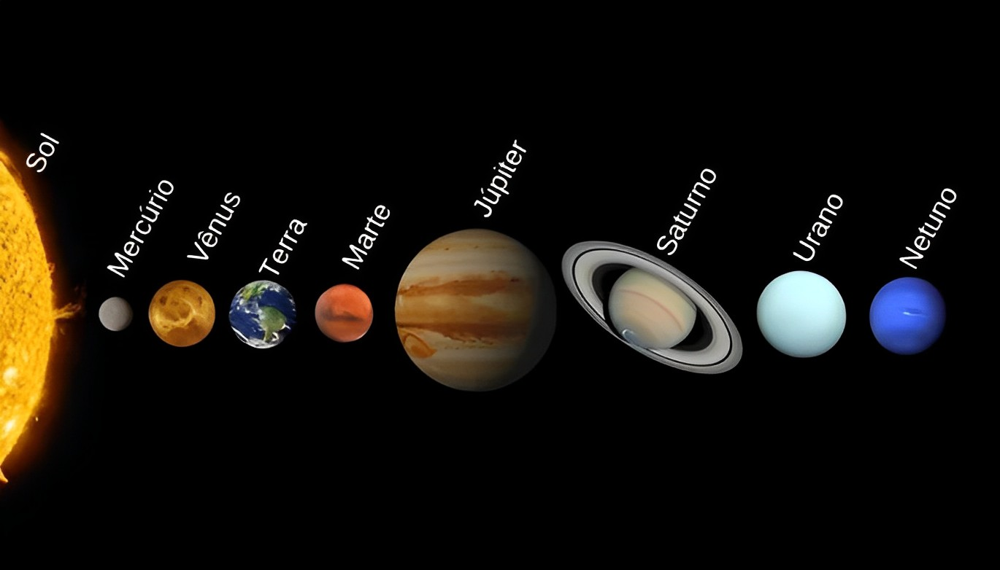

SISTEMA SOLAR.
O Sistema Solar é um sistema planetário composto pelo Sol e pelos objetos celestes que estão gravitacionalmente ligados a ele, incluindo planetas, luas, asteroides, cometas e outros corpos celestes. Esses corpos orbitam em torno do Sol, que é a principal fonte de luz e energia para o sistema.
